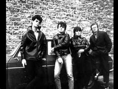

A 3 Dans Les WC, formé en 1978 à Saint-Quentin, Picardie, est un groupe de punk rock français. Connu pour son style provocateur et ses performances énergiques, le groupe a marqué la scène punk avant de se renommer WC3 en 1981. Leur musique est influencée par des artistes comme Devo, The Stranglers et Siouxsie and the Banshees.
Le groupe a été fondé par Jean-Marc "Spike" Tobaly (guitare), Jean-Michel "Mitch" Poisson (basse) et Jean-Pierre "Jipé" Poisson (batterie). Ils ont rapidement gagné en popularité grâce à leurs concerts énergiques et leur attitude rebelle. En 1981, après avoir changé de nom pour WC3, le groupe a continué à se produire et à enregistrer de la musique jusqu'à leur séparation en 1983.

Réseaux sociaux